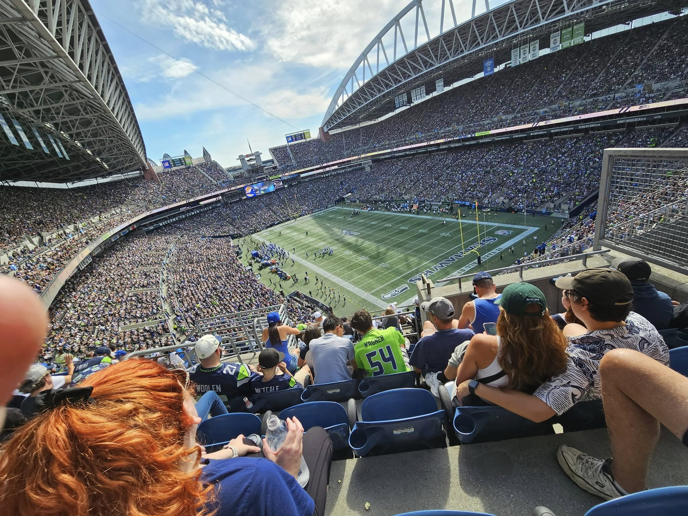
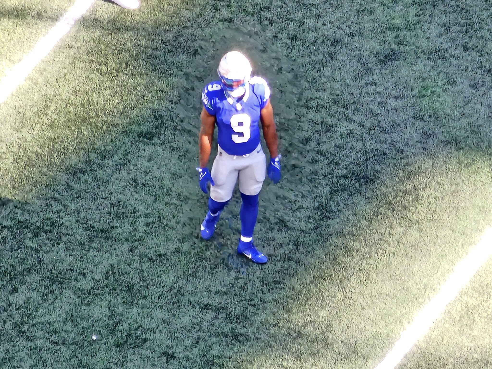
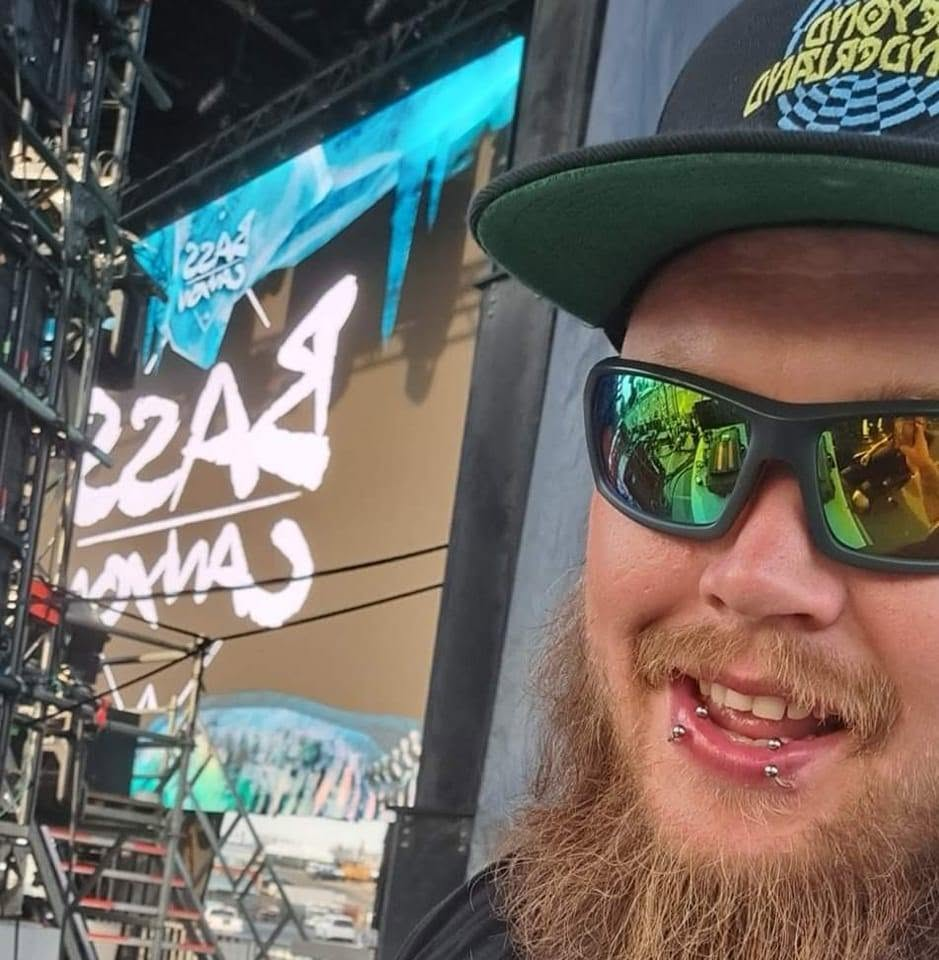
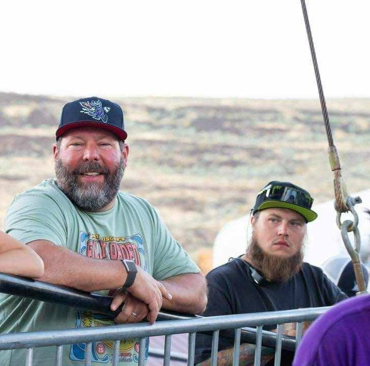

About Me
From Yakima, to the stage, to NFL fields, and now into the world of IT.
My Story
I was born in 1992 in Yakima, Washington. Growing up, I was always involved in something. I played football and basketball, and I started riding dirt bikes when I was seven years old. I was always looking for something to do, something to learn, or something I could get better at.
Football became a big part of my life when I was young. I played Grid Kids football with friends, including Cooper Kupp, and spent a lot of time playing football during recess. We would make up plays, run around the playground, and just have fun. Football gave me a place where I could compete, learn, and be around other people who loved the game.
As I got older, my interest in football went beyond playing it. I started watching the NFL all the time and became interested in the strategy behind the game. I would watch players, pay attention to how teams played, and try to figure out why certain plays worked and others didn't.
I also enjoyed watching players like Ray Lewis, Brett Favre, and Philip Rivers. I liked seeing their different styles and trying to understand what made them successful.
My family made football even more interesting. My mom and oldest brother were Packers fans, while my grandpa and I were Seahawks fans. Watching games together usually meant arguing about plays, talking about players, and giving each other a hard time about whose team was better.
Looking back, those conversations probably helped shape the way I think. I don't like just knowing that something happened. I like figuring out why it happened and what could have been done differently.
Dirt Bikes & Learning From Experience
Dirt bikes were another major part of my childhood. I started riding when I was seven, and riding became something I really enjoyed.
It also came with some hard lessons. I've had several accidents throughout my life. When I was twelve, I broke my arm. At fifteen, I broke my arm again. I also injured my back without knowing how serious the injury was at the time.
When I was twenty-four, I was involved in another dirt bike accident and broke my back again.
I've had a few accidents over my life, and dealing with injuries has changed the way I look at things. You don't always get to choose what happens to you, but you do get to choose what you do afterward.
Those experiences taught me how to adapt when things don't go according to plan. That is something that has followed me into my work, school, and now IT.
Football Has Always Been Part of My Life
Even when I wasn't able to play, football never really left my life. I spent more time watching games, paying attention to players, and thinking about what was happening on the field.
What started as something I loved playing turned into something I enjoyed studying. I liked the strategy, the decisions, the adjustments, and seeing how one small change could affect an entire game.
Football taught me discipline, focus, teamwork, and the importance of continuing to learn. Those lessons ended up being useful long after I stopped playing competitively.
Stagehand Work
As I got older, I started working as a stagehand. I've been doing stagehand and event production work for many years, and it has taken me to a lot of different places.
I've helped build and tear down concerts, sporting events, and other large productions. I've worked with different crews, companies, and people from all over.
Through my work, I've also had the opportunity to be around artists and performers such as Ginuwine, Trace Adkins, Sullivan King, Excision, KISS, Tool, Bert Kreischer, Gabriel Iglesias, and many others.
I've met random famous people through work and events, but some of the most valuable experiences have come from meeting people who were really good at what they did and learning from them.
I've also traveled for work and training. Every new place and every new crew gave me another opportunity to learn something different.
Working live events taught me that teamwork is extremely important. Things move fast, plans change, and problems can happen at any time. You have to communicate, pay attention, and figure things out quickly.
JDL FX
My stagehand work also gave me opportunities to work with JDL FX, a special effects company.
Working around special effects and large productions gave me more experience with technical equipment, safety, preparation, communication, and working as part of a crew.
A lot of what happens behind the scenes isn't something the audience ever sees. There is a lot of preparation and coordination that has to happen before a show even starts.
That experience taught me to pay attention to details and understand how my job affects everyone else working around me.
From Watching Football to Working SkyCam
One of the coolest opportunities I've had through my work was getting involved with SkyCam.
SkyCam is the camera system used to capture football games from above the field. Considering how much football has been a part of my life, getting to work around NFL football was a pretty amazing experience.
I went from watching football on TV as a kid to actually working around the production that helps capture the game.
I've worked football games and traveled for work and training. Being around that type of production showed me how much technical work goes into something that looks simple when you're sitting at home watching it on TV.
It also showed me how important communication, teamwork, preparation, and problem solving are when you're working with equipment and people in a live environment.
Some of My Work & Interests

Football has been a huge part of my life.

Another part of my football experience.

Live events and the production work I've been involved with.

Some of the people and events I've crossed paths with through work.
Why I'm Getting Into IT
After years of working as a stagehand and doing physical work, I've started thinking more about what I want to do long term.
I've also been dealing with a shoulder injury that I need to have fixed again. That has been another reason for me to start looking toward work that is less dependent on my body.
That's one of the reasons I decided to jump into the world of IT.
I've always liked figuring out how things work. I like troubleshooting problems, learning new things, and finding out why something isn't working. Those are the same kinds of skills I've used in stagehand work, just in a different environment.
I'm currently working through a two-year IT program and building skills in areas like HTML, CSS, JavaScript, cybersecurity, and technology.
I'm still learning, and I definitely don't know everything yet. That's okay. I'm here to learn, make mistakes, fix them, and keep getting better.
My First Major IT Project
This website is my first major project for school, but I'm also building it for myself.
I wanted something I could actually use to show what I've learned instead of just completing an assignment and moving on to the next one.
Building this site has given me a chance to work with HTML, CSS, and JavaScript while learning how to troubleshoot problems when things don't work the way I expect them to.
I've had to figure out things like why images weren't showing up, why buttons weren't working, how to make dark mode work, and how to get different pages and scripts working together.
There is still plenty I want to improve, but that is part of the point. This website can grow as my skills grow.
What I've Learned Along the Way
When I look back at everything I've done, it doesn't always seem like the different parts of my life would connect.
Football, basketball, dirt bikes, stagehand work, traveling, JDL FX, SkyCam, and now IT are all very different things.
But they have all taught me some of the same things. Pay attention. Keep learning. Work with people. Figure out problems. And don't quit just because something gets difficult.
I've learned that experience doesn't always come from a classroom. Sometimes it comes from making mistakes, getting knocked down, having to adapt, and trying again.
I think that's probably the biggest thing I've carried with me through all of it.
I'm not completely sure where IT will take me yet, but I'm excited to find out.
This is the beginning of another chapter for me, and this website is one of the first things I'm building along the way.
Get In Touch
If you want to talk about IT, live events, football, or anything else, feel free to reach out.
Email me: Adperkins1992@gmail.com
Made It This Far?
If you made it this far, click the button below.